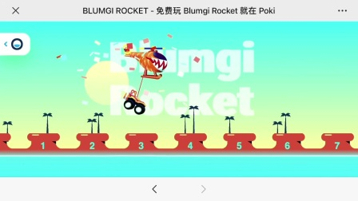
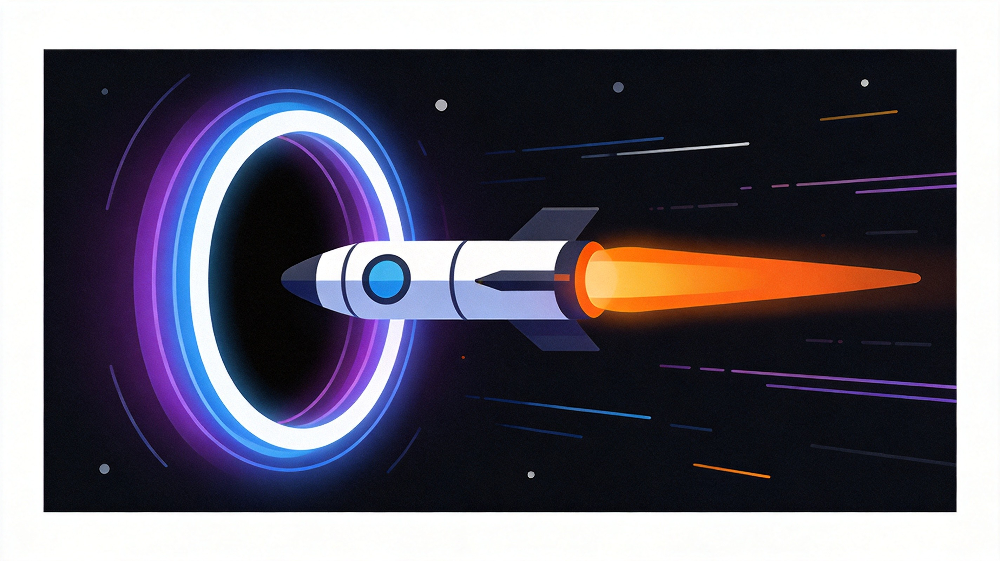

Blumgi Rocket is a physics-based platformer where you launch yourself through obstacle courses using rocket boosters. The game combines precision aiming with trajectory prediction for satisfying, skill-based gameplay. Whether you're aiming for the finish line or hunting speedrun times, this guide covers everything you need to master the rocket.
🎮 Game Basics

Blumgi Rocket drops you on a launch platform and challenges you to reach the finish flag using rocket-propelled jumps. The goal is to navigate through obstacle courses in the fastest time possible, collecting stars and gems along the way.
Core Mechanics
- Aim - Click and drag to set launch direction and power
- Launch - Release to fire your rocket
- Boost - Use mid-air boosts to adjust trajectory
- Land - Touch down on platforms to stop safely
Objectives
Each level has multiple objectives: reach the flag, collect stars, and complete the course under par time. You can finish levels without completing all objectives, but full mastery requires hitting every target.
🎯 Aiming & Trajectory

Aiming is the foundation of Blumgi Rocket. Your launch angle and power determine your entire flight path.
Reading the Trajectory Line
When aiming, a trajectory line shows your projected path. However, this line doesn't account for gravity and air resistance perfectly. Learn to estimate where you'll actually land versus where the line shows.
Power Control
Longer drag equals more power, but also more unpredictability. Start conservative and adjust upward once you understand how the physics feel. Overpowered launches send you flying past your target.
For precise landings, aim for the lower portion of your target. Gravity pulls you down during flight, so aiming slightly below your intended landing spot compensates for the drop.
Angle Considerations
Steeper angles give you more vertical distance but less horizontal range. Choose angles based on your goal: near targets benefit from flatter trajectories, distant targets need higher arcs.
⚡ Boost Management

Mid-air boosts let you adjust your trajectory after launching. This is crucial for correcting imperfect launches and navigating complex courses.
When to Boost
Don't boost immediately after launching—save your boost for corrections mid-flight. A common mistake is wasting the boost too early, leaving you with no resources when you actually need adjustment.
Boost Direction
You can boost in any direction. Use boosts to accelerate, decelerate, or change direction. Combining directional boosts with trajectory prediction lets you reach seemingly impossible paths.
Conservation Strategy
Levels have limited boosts. Plan your boost usage before launching. If a level has three boosts and you need all three to complete it, avoid wasting any on unnecessary adjustments.
🛬 Landing Techniques
Soft Landings
Hitting surfaces at extreme angles or speeds causes you to bounce chaotically or fail the level. Aim for flat surfaces and approach at moderate angles for clean landings.
Bounce Recovery
If you do bounce, immediately assess your trajectory. Often you can recover by boosting away from danger or using subsequent bounces to reach your goal.
Platform Landing
Small platforms require precision. Use boost to fine-tune your approach—a final micro-boost can make the difference between landing on the platform and missing entirely.
Practice landing on the edges of platforms intentionally. Edge landings give you maximum control over your next launch since you can choose any direction from the platform's edge.
🚧 Obstacle Navigation

Spikes and Hazards
Red hazards instantly end your run. Study level layouts before launching to plan safe paths. Sometimes the longest route is safer than the direct one.
Moving Platforms
Moving platforms require timing and prediction. Watch their patterns, estimate when you'll arrive, and adjust your launch accordingly. Patience beats rushing into moving hazards.
Collectibles
Stars and gems are optional but reward exploration. Weigh the risk versus reward: sometimes collecting items requires difficult detours that cost time or risk failure.
🏃 Speedrun Tips

Once you understand the basics, speedrunning Blumgi Rocket becomes addictive. Here are ways to shave seconds off your times.
Route Optimization
Every level has multiple routes. Practice different approaches to find the fastest path. Sometimes a technically harder route is faster because it covers more distance.
Minimal Boost Usage
Every boost you don't use is time you didn't spend re-aiming. If you can complete a section without boosting, do it. Save boosts for moments where they're truly necessary.
Perfect Launch Setup
Speedrunners spend deliberate time planning their launch. While it seems counterintuitive, a well-aimed first launch often saves more time than rushing and missing.

❓ Frequently Asked Questions
How do I control my landing angle?
Your landing angle depends on your trajectory at touchdown. Flat approaches land cleanly; steep approaches cause bouncing. Use boosts to flatten your angle before landing.
What happens if I run out of boosts mid-air?
You'll continue on your current trajectory until you land or hit a hazard. This is why planning boost usage is crucial—know which boosts are essential versus optional.
Can I replay levels to improve?
Yes! Blumgi Rocket encourages replay. Each level can be completed multiple times with different strategies. Returning to earlier levels with new skills often reveals faster routes.
How do I collect all the stars?
Stars are often in challenging locations requiring detours or precise trajectories. Don't worry about collecting everything on your first attempt—master the basics first, then optimize for stars.
Is there a penalty for failing a level?
No permanent penalty—you can retry unlimited times. Failing is part of learning. Each failure teaches you something about level layouts and optimal routes.
📝 Conclusion
Blumgi Rocket is a game of patience, precision, and physics mastery. Take your time learning the fundamentals before rushing for speedrun times. Once the basics feel natural, optimization becomes its own reward. Launch, fly, land—and most importantly, have fun.
Enjoy physics-based platformers? Try Hole.io for another satisfying physics game, or check out Gartic.io for creative multiplayer fun.
Last updated: February 1, 2024
Written by the iogameguide.com team